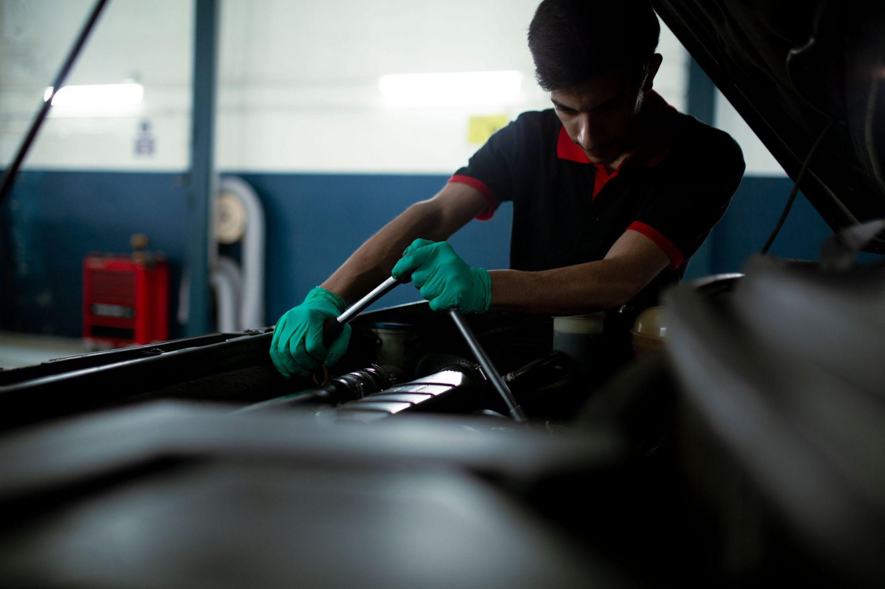
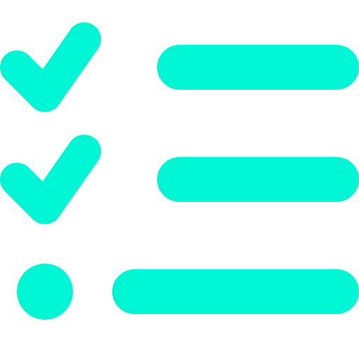
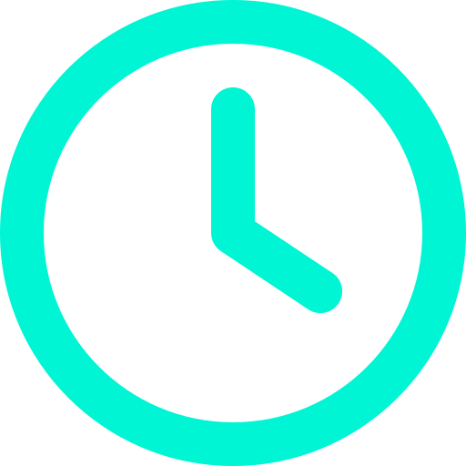
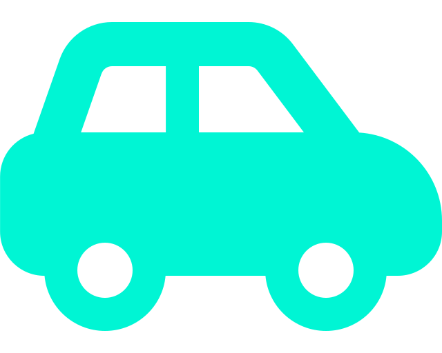
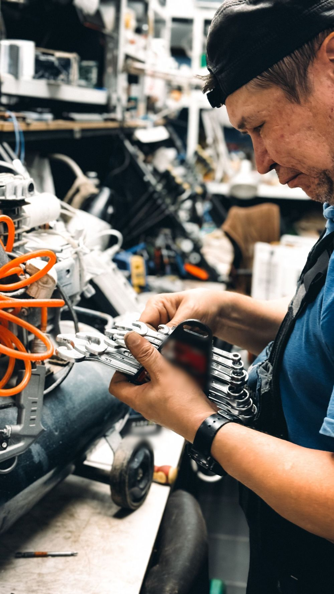
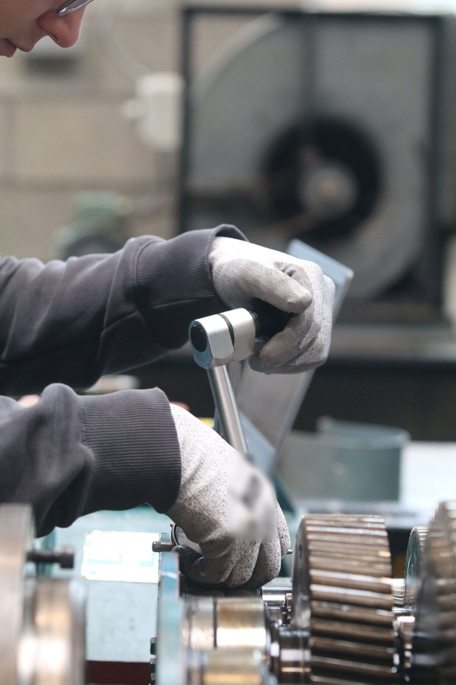
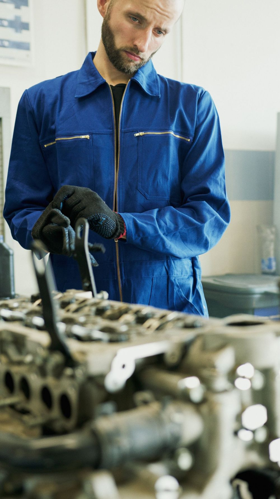

4,9+1.200 reservas este mes
Tu taller, a la hora exacta
Reserva en 1 clic desde el móvil. Tu coche entra directo al puesto de trabajo: sin colas, sin turnos improvisados, sin salas de espera.

4,9+1.200 reservas este mes
Reserva en 1 clic desde el móvil. Tu coche entra directo al puesto de trabajo: sin colas, sin turnos improvisados, sin salas de espera.
Mantenimiento • Diagnosis • Entrega Lunes a sábado · Madrid Sin esperas
Reserva en 1 clic
Los huecos que ves son reales. El que reservas es tuyo: llegas y tu coche entra.
ML-0000
Llega 5 minutos antes. Sin papeles: solo tu matrícula.
Cómo funciona

Elige online lo que necesita tu coche en menos de un minuto.

Reservas un hueco real, no una cola: tu horario, a tu ritmo.

Tu coche pasa directo al puesto de trabajo, sin esperar turno.
Servicios

Cambio de aceite, filtros y revisión general sin cita duplicada.

Detección de averías con equipos de última generación.
Sigue con tu día mientras trabajamos en tu vehículo.

Cumple con la normativa vigente sin colas ni citas duplicadas.
Seguimiento en directo
Recibes un enlace al dejar el coche. Ves cada paso en tiempo real y te avisamos en cuanto está listo para recoger.
Mantenimiento express · puesto 3
Opiniones
Reservé por la mañana y a las cinco ya tenía el coche listo, sin llamadas ni esperas en el mostrador.
La hora que elegí fue la hora real de entrada. Cero colas, cero sorpresas.
Precio claro desde el primer momento, sin sorpresas al recoger el coche.
Elige tu hora exacta ahora mismo y evita la cola de esta semana.
Reserva tu hueco ahoraQuedan huecos libres hoy